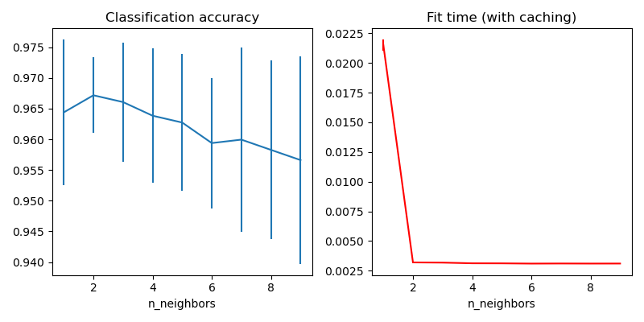

Note
Click here to download the full example code or to run this example in your browser via Binder
Caching nearest neighbors¶
This examples demonstrates how to precompute the k nearest neighbors before using them in KNeighborsClassifier. KNeighborsClassifier can compute the nearest neighbors internally, but precomputing them can have several benefits, such as finer parameter control, caching for multiple use, or custom implementations.
Here we use the caching property of pipelines to cache the nearest neighbors graph between multiple fits of KNeighborsClassifier. The first call is slow since it computes the neighbors graph, while subsequent call are faster as they do not need to recompute the graph. Here the durations are small since the dataset is small, but the gain can be more substantial when the dataset grows larger, or when the grid of parameter to search is large.
# Author: Tom Dupre la Tour
#
# License: BSD 3 clause
from tempfile import TemporaryDirectory
import matplotlib.pyplot as plt
from sklearn.neighbors import KNeighborsTransformer, KNeighborsClassifier
from sklearn.model_selection import GridSearchCV
from sklearn.datasets import load_digits
from sklearn.pipeline import Pipeline
X, y = load_digits(return_X_y=True)
n_neighbors_list = [1, 2, 3, 4, 5, 6, 7, 8, 9]
# The transformer computes the nearest neighbors graph using the maximum number
# of neighbors necessary in the grid search. The classifier model filters the
# nearest neighbors graph as required by its own n_neighbors parameter.
graph_model = KNeighborsTransformer(n_neighbors=max(n_neighbors_list), mode="distance")
classifier_model = KNeighborsClassifier(metric="precomputed")
# Note that we give `memory` a directory to cache the graph computation
# that will be used several times when tuning the hyperparameters of the
# classifier.
with TemporaryDirectory(prefix="sklearn_graph_cache_") as tmpdir:
full_model = Pipeline(
steps=[("graph", graph_model), ("classifier", classifier_model)], memory=tmpdir
)
param_grid = {"classifier__n_neighbors": n_neighbors_list}
grid_model = GridSearchCV(full_model, param_grid)
grid_model.fit(X, y)
# Plot the results of the grid search.
fig, axes = plt.subplots(1, 2, figsize=(8, 4))
axes[0].errorbar(
x=n_neighbors_list,
y=grid_model.cv_results_["mean_test_score"],
yerr=grid_model.cv_results_["std_test_score"],
)
axes[0].set(xlabel="n_neighbors", title="Classification accuracy")
axes[1].errorbar(
x=n_neighbors_list,
y=grid_model.cv_results_["mean_fit_time"],
yerr=grid_model.cv_results_["std_fit_time"],
color="r",
)
axes[1].set(xlabel="n_neighbors", title="Fit time (with caching)")
fig.tight_layout()
plt.show()
Total running time of the script: ( 0 minutes 0.899 seconds)